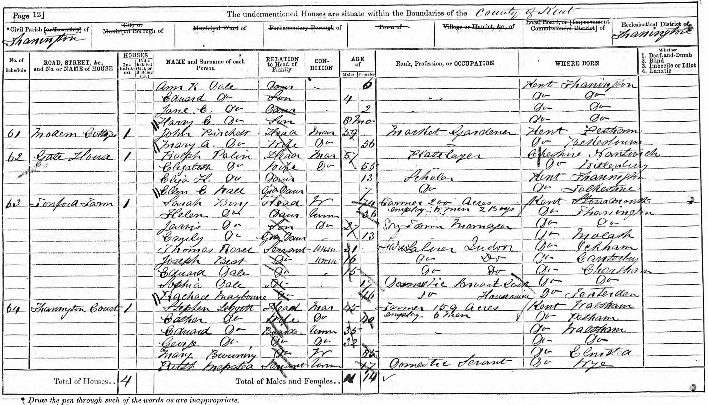

George Charles Horne 1860 - 1941
[ Home ] | [ Calendar ] | [ Surnames Index ] | [ Errors ] | [ Family History ]A barman and auctioneer's porter and the child of William Horn (a policeman) and Elizabeth Fox, George Horne, the first cousin three-times-removed on the father's side of Nigel Horne, was born in London, England on 4 Sept 18601,2,3,4, was baptised in Whitechapel, London, England on 28 Oct 1860 and married his cousin on his father's side Rosa Horn (with whom he had 4 children: Alice Rose, Emma Elizabeth, George Charles and Sidney Albert, along with 1 surviving child) in St Lawrence, Thanet, Kent, England on 6 May 18912.
During his life, he was living on Batty Street in Whitechapel on 7 Apr 18619; at 11 Batty Street in Whitechapel on 2 Apr 187110; at 62 Boundary Road, Ramsgate, Kent on 31 Mar 19018 (when he was living with his) - less than a mile from his cousin on his father's side Caroline Horn who was living at 3 Elms Park Terrace, Ramsgate, Kent and his father William Horn who was living at 62 Boundary Road, Ramsgate, Kent -; at 77 Hardres Street, Ramsgate, Kent on 2 Apr 19117 - less than a mile from his cousin on his father's side Harry Horn who was living at 15 Liverpool Lawn, Ramsgate, Kent, his cousin on his father's side Ellen Mary Ann who was living at 71 Grange Road, Margate, Kent - and his first cousin once-removed on his father's side Isaac Horne who was living at 4 Newington Terrace, St Lawrence in Thanet - and on 19 Jun 19213; and at 32 Chapel Road, Ramsgate, Kent in 1936, on 29 Sept 19394 and in 1941. On 19 Jun 1921 he was working at Scarlett Y Goldsack, Auctioneers at 36 High Street, Ramsgate, Kent, England.
He died on 24 Feb 1941 in Thanet5,6.
Parents
- William was born c. 1827
- Elizabeth was born c. 1837
Children
- Alice Rose was born on 15 Feb 1893
- Emma Elizabeth was born on 8 May 1897
- George Charles was born c. Feb 1901
Citations
- 1901 England Census Online publication - Provo, UT, USA: The Generations Network, Inc., 2005.Original data - Census Returns of England and Wales, 1901. Kew, Surrey, England: The National Archives of the UK (TNA): Public Record Office (PRO), 1901. Data imaged from the National
- 1911 England Census Online publication - Provo, UT, USA: Ancestry.com Operations, Inc., 2011.Original data - Census Returns of England and Wales, 1911. Kew, Surrey, England: The National Archives of the UK (TNA), 1911. Data imaged from the National Archives, London, England.
- 1921 Census Of England & Wales - Findmypast (was age 60 and the head of the household)
- 1939 Register - Findmypast (was recorded at this address)
- England & Wales Government Probate Death Index 1858-2019 - Findmypast
- England & Wales deaths 1837-2007 - Findmypast
- 1911 Census for England & Wales - Findmypast (was age 50 and the head of the household)
- 1901 England, Wales & Scotland Census - Findmypast (was age 40 and the head of the household)
- 1861 England, Wales & Scotland Census - Findmypast (was age 0 and the son of the head of the household)
- 1871 England, Wales & Scotland Census - Findmypast (was age 10 and the son of the head of the household)
Media
George Charles Horne - probate
Thanet Advertiser 26 Sep 1891

Thanet Advertiser 10 Oct 1891
1871 UK Census

1911 UK Census page 1

1911 UK Census page 2

1936 Isle of Thanet Kelly's Directory

Kent, Canterbury Archdeaconry marriages 1538-1928 - GBPRS/CANT/M/97022169/1
Kent, Canterbury Archdeaconry banns 1754-1928 - GBPRS/CANT/M/94005455/1
1911 Census for England & Wales - GBC/1911/RG14/04521/0043/1
1939 Register Transcription - TNA-R39-1765-1765E-006-27
England & Wales births 1837-2006 - BMD/B/1860/4/AZ/000518/143
England & Wales deaths 1837-2007 - BMD/D/1941/1/AZ/000614/082
1901 England, Wales & Scotland Census - GBC/1901/0007455217
England & Wales marriages 1837-2008 - BMD/M/1932/4/AZ/000571/035
London, Docklands and East End Baptisms, 1558-1933 - GBPRS/B/902290373/1
1939 Register Transcription - TNA-R39-1765-1765E-006-26
1939 Register - TNA/R39/1765/1765E/006/28
England Births & Baptisms 1538-1975 - R_960798661
1861 England, Wales & Scotland Census Transcription - GBC-1861-0001771511
England & Wales Government Probate Death Index 1858-2019 - GBOR/GOVPROBATE/C/1941-1941/00071313
England & Wales marriages 1837-2005 - BMD/M/1891/2/AZ/000142/270
1921 Census of England & Wales - GBC/1921/RG15/04474/0051/01
Family Tree

Map
Generated by ged2site. Last updated on Jul 3, 2024
Known Issues
Surname is different from both parents
Residence record for 1941 contains no citation
Residence record for 1936 contains no citation
Listed in the residence for 1936, but spouse Rosa Horn is not